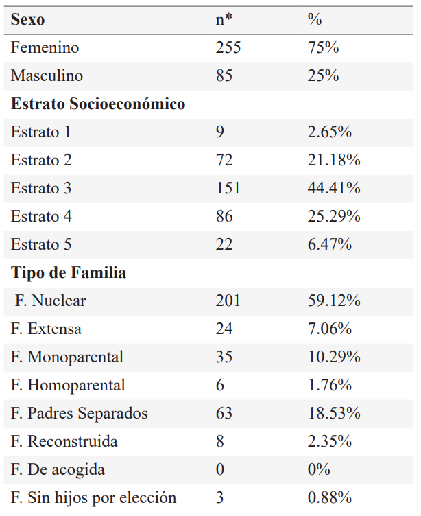
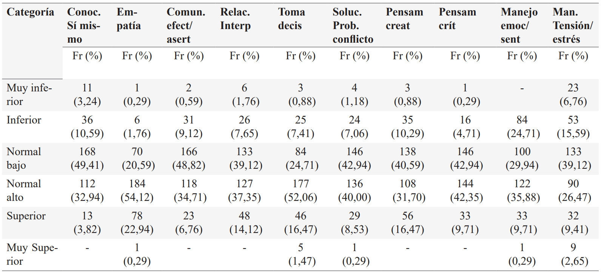

ISSN-PRINT 1794-9831 / E-ISSN 2322-7028
Vol. 19 Nº 3 / sep - dic, 2022 / Cúcuta, Colombia.
ISSN-PRINT 1794-9831 / E-ISSN 2322-7028
Vol. 19 Nº 3 / sep - dic, 2022 / Cúcuta, Colombia.
Resumen
Objetivo: Determinar la prevalencia del bienestar psicológico y el nivel de habilidades para la vida en estudiantes de pregrado de una institución educativa de ciencias de la salud en la ciudad de Bogotá. Metodología: Se realizó un estudio descriptivo, transversal y prospectivo en 340 estudiantes de la facultad de: medicina, instrumentación, enfermería, psicología y citohistología. Se aplicó la escala de habilidades para la vida y bienestar psicológico de RYFF. Resultados: De los 340 estudiantes, las 10 dimensiones del test habilidades para la vida evaluadas se encontraban en mayor frecuencia en un nivel normal bajo o normal alto de acuerdo con la mediana del puntaje Z; con relación al test de bienestar psicológico se encontró que la prevalencia del nivel de bienestar psicológico en los estudiantes de pregrado evaluados, alto en un 15.59%, moderado en el 79.12% y de 5.29% para un nivel bajo. Conclusiones: En la mayoría de los estudiantes de pregrado del área de la salud se encuentran valores en normal alto y bajo, en los niveles de habilidades para la vida necesarios para poder tener un adecuado desarrollo profesional y personal, por lo que habría un beneficio en un mayor fortalecimiento y educación sobre este tema, al poder convertirlas en factor protector frente a enfermedades mentales como la depresión y la ansiedad.
Palabras Claves: Aptitud; Bienestar psicológico; Salud mental; Estudiantes.
Abstract
Objective: To determine the prevalence of psychological well-being and the level of life skills in undergraduate students of a health sciences educational institution in the city of Bogotá. Methodology: A descriptive, cross-sectional and prospective study was carried out in 340 students from the Faculty of Medicine, Instrumentation, Nursing, Psychology and Cytohistology. The RYFF life skills and psychological well-being scale was applied. Results: Of the 340 students, the 10 dimensions of the life skills test evaluated were more frequently at a low normal or high normal level according to the median Z score; In relation to the psychological well-being test, it was found that the prevalence of the level of psychological well-being in the undergraduate students evaluated was high in 15.59%, moderate in 79.12% and 5.29% for a low level. Conclusions: In the majority of undergraduate students in the health area, high and low normal values are found, in the levels of life skills necessary to be able to have an adequate professional and personal development, so there would be a benefit in a greater strengthening and education on this subject, by being able to turn them into a protective factor against mental illnesses such as depression and anxiety.
KeyWords: Aptitude; Psychological well-being; Mental health; Students.
Resumo
Objetivo: Determinar a prevalência de bem-estar psicológico e o nível de habilidades para a vida em estudantes de graduação de uma instituição de ensino de ciências da saúde na cidade de Bogotá. Metodologia: Foi realizado um estudo descritivo, transversal e prospectivo em 340 alunos da Faculdade de Medicina, Instrumentação, Enfermagem, Psicologia e Cito-histologia. Foi aplicada a escala de habilidades para a vida e bem-estar psicológico RYFF. Resultados: Dos 340 alunos, as 10 dimensões do teste de habilidades para a vida avaliadas apresentaram maior frequência no nível normal baixo ou normal alto de acordo com a mediana do escore Z; Em relação ao teste de bem-estar psicológico, verificou-se que a prevalência do nível de bem-estar psicológico nos graduandos avaliados foi alta em 15,59%, moderada em 79,12% e baixa em 5,29%. Conclusões: Na maioria dos estudantes de graduação da área da saúde, encontram-se valores de normalidade altos e baixos, nos níveis de habilidades de vida necessários para poder ter um desenvolvimento profissional e pessoal adequado, portanto haveria um benefício em um maior fortalecimento e educação sobre esse tema, podendo transformá-los em fator de proteção contra doenças mentais como depressão e ansiedade.
Palavras-chave: Aptidão; Bem-estar psicológico; Saúde mental; Alunos
Autor de correspondencia*
1* Instrumentadora quirúrgica y psicóloga, Fundación Universitaria de Ciencias
de la Salud-FUCS. Especialista en docencia universitaria. Máster en neuropsicología y educación.
Bogotá D.C.
sandra.guerrero@fucsalud.edu.co,
Instrumentadora quirúrgica y psicóloga, Fundación Universitaria de Ciencias
de la Salud-FUCS. Especialista en docencia universitaria. Máster en neuropsicología y educación.
Bogotá D.C.
sandra.guerrero@fucsalud.edu.co,  0000-0003-0567-4124
0000-0003-0567-4124
2* Médico
Familiar Pontificia Universidad Javeriana. Magíster en Administración de Salud. Docente Fundación
Universitaria de Ciencias de la SaludFUCS. Bogotá D.C., Colombia.
rgrico@fucsalud.edu.co, 0000-0002-0722-2322
3* Residente de
Medicina Familiar, Fundación Universitaria de Ciencias de la
Salud - FUCS – Hospital Universitario
de San José. Bogotá D.C., Colombia.
kt3.rojas@gmail.com, 0000-0002-0722-2322
4* Residente de
Medicina Familiar, Fundación Universitaria de Ciencias de la
Salud - FUCS – Hospital Universitario
de San José, Bogotá D.C., Colombia.
jcmadrid@fucsalud.edu.co, 0000-0001-7872-4111
Recibido: 29 mayo 2022
Aprobado: 5 octubre 2022
Para citar este artículo / To reference this article / Para citar este artigo: Guerrero-Aragón SC, Rico-Salas RG, Rojas-Martínez K, Madrid-Lobo J. Habilidades para la vida y bie- nestar psicológico en estudiantes de la salud en Bogotá DC, Colombia, 2021. 2023; 20(1):9-21. https://doi.org/10.22463/17949831.3376
© Universidad Francisco de Paula Santander.
Este es un artículo bajo la licencia CC-BY-NC-ND

Introducción
El bienestar psicológico (BP) es una noción amplia que abarca aspectos sociales, subjetivos y psicológicos, así como conductas relacionadas con la salud en general que llevan a las personas a actuar en una dirección positiva, que guardan relación con el cómo la gente lucha día a día frente a los desafíos que le impone la vida. El bienestar psicológico es trascendental en el equilibrio individual y en la interacción social, en consideración a que las emociones positivas y bajo nivel de stress provocan cambios en la homeostasis interna que se expresan bioquímicamente con menores niveles de cortisol y de citoquinas derivando en un sueño REM más prolongado y una mejor salud cardiovascular (1).
Las habilidades para la vida (HpV) son aquellas que se desarrollan durante todas las etapas del desarrollo humano, las cuales previenen y mitigan las conductas de riesgo y permiten enfrentar de manera exitosa los desafíos de la vida (2). De esta manera, se reconocen tres categorías de habilidades: cognitivas como alternativa de resignificación de las situaciones; emocionales que permiten el desarrollo afectivo, la expresión y la comprensión de estas; y las habilidades sociales que permiten relaciones asertivas y estables (3). Dentro de las 3 categorías previas mencionadas se derivan habilidades como: autoconocimiento, empatía, comunicación asertiva, relaciones interpersonales, toma de decisiones, manejo de problemas y conflictos, pensamiento crítico, manejo de emociones y sentimientos entre otras, que contribuyen a la capacidad de afrontamiento a diferentes circunstancias además dependiendo de su nivel pueden ser factores de tipo individuales, familiares y sociales, de riesgo, o protectores (3, 4).
Por otra parte, el bienestar psicológico se enmarca en el desarrollo personal y se relaciona con las HpV y se caracteriza por ser un tema de interés de la psicología positiva; según Meier et al., (5) el BP propuesto por Carol Ryff, es un concepto multidimensional puesto que hace referencia a las capacidades y al desarrollo desde lo psicológico, personal y social que influye positivamente en el individuo; la escala que propone Ryff (5) se componen de seis dimensiones y cuenta con categorías de: condiciones de vida, estilo de vida, modo de vida, las cuales pueden estar mediadas por los estados de ánimo, salud mental, personalidad, condiciones socio-históricas y culturales del individuo.
Es así, que la salud mental se ha visto afectada y ha ido en aumento, tomando fuerza con la pandemia COVID-19 en el año 2020, en países de ingresos medios y bajos se presentó un 25% de aumento en los eventos psiquiátricos, procedente de antecedentes y del aislamiento preventivo obligatorio, causando un aumento de estrés que condujo a un aumento de estado de ansiedad y depresión por los sentimientos de soledad, miedo a la infección, sufrimiento y la muerte de la propia persona y/o de los seres queridos, el dolor después del duelo, preocupaciones financieras, escasa socialización lo que ha generado baja habilidad de afrontamiento, crisis emocionales y pensamientos suicidas (6).
En Colombia de acuerdo con la Encuesta de Salud Mental del Ministerio de Salud y Protección Social del año 2015, el 52,2% de los jóvenes encuestados presentaba uno o dos síntomas de ansiedad, además, personas de 24 años experimentaron sentimientos de preocupación y nerviosismo (41,2%), seguido por la población de 25 a 54 años (39,2%), y, por la población de 55 años o más (38,6%), igualmente, se presentan estados y sentimientos como “cansancio”, “soledad”, “tristeza”, ”dolores de cabeza o estomacales” y “dificultad para dormir” (7, 8). En este punto se deben sumar los últimos sucesos de gran envergadura como el aislamiento preventivo obligatorio tras la pandemia por SARSCOV-2 / COVID-19, la cual reforzó la manifestación de aspectos psicológicos por las condiciones restrictivas que influyen el desempeño individual, familiar, social, repercutiendo en la baja regulación emocional ocasionada por el miedo, ira y tristeza, además, de los estados de tensión, los niveles de estrés, el aumento de la depresión y la ansiedad, por los problemas económicos, el aislamiento, el temor al contagio, afectando el bienestar, físico, mental y emocional de la población en general (9-11). Es así que, las HpV como el BP influyen en la capacidad de afrontamiento a partir de las habilidades intra e interpersonales que permiten adaptarse a diferentes situaciones de la vida en los individuos (12, 13).
Los trastornos psiquiátricos en el mundo son elevados y con tendencia al ascenso (280 millones de personas con depresión y cada año se suicidan más de 700.000 personas, 45 millones de personas padecen trastorno bipolar, 21 millones de personas con esquizofrenia) especialmente en países de ingresos medios y bajos (14). Las HpV se convierten en herramientas protectoras para el desarrollo de estas condiciones, o al menos facilitan una mejor convivencia con algunas de ellas. Con la llegada de la pandemia por el SARS CoV2, estos trastornos se incrementaron cobrando alta relevancia (13, 14). En Colombia, de acuerdo con el boletín de salud mental hacia el año 2015, 4 de cada 100 habitantes consultaron a los servicios de salud por síntomas relacionados con la salud mental, de los cuales el 2,4% terminaron hospitalizados a causa de trastornos mentales y del comportamiento (15). Entre el 1 de enero del 2020 al 30 de junio del 2021, se suicidaron aproximadamente 3.672 personas en el país; es decir, aproximadamente siete personas por día en ese periodo de tiempo y en el transcurso de la pandemia (16).
El personal de salud en formación suele estar inmerso en un contexto hospitalario con responsabilidades y situaciones en la práctica clínica, que adicional a los retos de la vida cotidiana, generan sobrecarga física y emocional, sin embargo, por tratarse de proveedores de salud se asume erróneamente que gozan de buen nivel de salud mental, olvidando que, como cualquier otra persona, están inmersos en un contexto académico y hospitalario exigente que ejerce presión sobre el individuo, que de alguna forma termina influyendo sobre su salud física y mental (17). Por lo expuesto, este estudio pretende conocer la prevalencia del nivel de BP y HpV en estudiantes de pregrado del área de la salud, temas poco abordados hasta el momento en instituciones educativas del país, esperando con los resultados desarrollar actividades institucionales tendientes a fortalecer y brindar herramientas a los estudiantes para enfrentar de la mejor manera las diferentes situaciones y retos que plantea la vida universitaria y asistencial en salud.
Objetivos
Objetivo general
Determinar la prevalencia del bienestar psicológico (BP) y el nivel de habilidades para la vida (HpV) en estudiantes de pregrado de una institución educativa de ciencias de la salud en la ciudad de Bogotá.
Objetivos específicos
Materiales y Métodos
Se realizó un estudio cuantitativo descriptivo de corte transversal, en el que se incluyeron estudiantes mayores de edad de los programas de medicina, enfermería, instrumentación quirúrgica, psicología y citohistotecnología de una universidad de ciencias de la salud de Bogotá.
La población total del estudio fue de 2104 estudiantes de los programas de medicina, enfermería, instrumentación quirúrgica, psicología y citohistotecnología de una universidad de ciencias de la salud de Bogotá.
Se realizó un muestreo aleatorio simple, puesto que todos tienen la misma probabilidad de ser escogidos de los programas mencionados; la muestra fue de 340 estudiantes. Se incluyeron aquellos que decidieron participar en el estudio y se excluyeron estudiantes que se encontraban cursando especializaciones, maestrías, diplomados o cursos de extensión académica.
Los instrumentos utilizados para la recolección de datos fueron el test de habilidades para la vida de Díaz-Posada et al., (18) y la escala de bienestar psicológico de Ryff (5); para determinar el perfil demográfico de la población de estudio se incluyó el apartado al inicio de los instrumentos mencionados anteriormente con el fin de identificar las características sociodemográficas de la población.
Ficha de datos sociodemográficos diseñada por los investigadores, ubicada al inicio de los instrumentos en la que los participantes registran las variables de edad, sexo, estrato socioeconómico, tipo de familia y carrera universitaria.
Test habilidades para la vida diseñado por Díaz-Posada et al., (18) evalúa conocimientos, habilidades o capacidades y personalidad de un individuo con la medición del nivel de las 10 habilidades: autoconocimiento, manejo de emociones y sentimientos, manejo de la tensión y el estrés, comunicación asertiva, empatía, relaciones interpersonales, manejo de conflictos, toma de decisiones, pensamiento creativo y crítico propuesto por la OMS. El instrumento se divide en 10 dimensiones, cada una compuesta por 4 indicadores que, a su vez, se subdividen en 2 ítems por indicador con direccionalidad tanto positiva como negativa, son 8 ítems por dimensión, es decir, 80 ítems en total así: Muy superior con puntuación 2.1 a 3.0 en el que presenta un nivel de dimensión muy elevado; Superior 1.1 a 2.0 en el que presenta un nivel de dimensión elevado; Normal alto 0.1 a 1.0 en el que presenta un nivel de dimensión estándar con tendencia a mejorar; Normal bajo -1.0 a 0 en el que presenta un nivel de dimensión que tiende a no estar fortalecido; Inferior -2.0 a -1.1 el nivel de dimensión es nulo. El proceso psicométrico se obtiene sumando el puntaje de las dimensiones (siendo el máximo 40), cada suma se trasforma con los baremos representados con los valores directos Z, T o percentiles; dentro de las dimensiones se encuentran dos (empatía y manejo de sentimientos y emociones), las cuales cuentan con baremación por sexo por no tener diferencias estadísticamente significativas.
Escala de bienestar psicológico de Ryff (19) propone un instrumento como modelo teórico multidimensional, construido sobre una base de aportaciones clínicas, humanistas, del ciclo primordial y de la sanidad mental, mediante seis dimensiones: autoaceptación, relaciones positivas con otras personas, autonomía, dominio del entorno, propósito en la vida y crecimiento personal; la escala tiene una puntuación total de 234 puntos, de los cuales una puntuación mayor de 176 señala un BP elevado; si el puntaje se encuentra entre 141 y 175 corresponde a BP alto; entre 117 y 140 puntos BP moderado; e inferior a 116 puntos se relaciona con BP bajo.
El procedimiento llevado a cabo para realizar el proyecto se basó en los siguientes pasos:
Para el análisis de datos estos se tabularon en Excel 2017 y el análisis estadístico se realizó en el software STATA 13. Para los niveles tanto de las dimensiones de HpV como de BP los datos se reportaron a través de medidas de tendencia central y se utilizaron gráficos de cajas y bigote.
Este estudio se apoyó por las normas internacionales con la declaración de Helsinki (20) y el informe de Belmont (21); con la normatividad colombiana con la Resolución 8430 de 1993 (22), estableciendo el estudio como de riesgo mínimo. Este trabajo fue aprobado por el Comité de Ética de Investigación con seres humanos de la Sociedad de Cirugía de Bogotá Hospital de San José–FUCS, y por recomendación del mismo el estudio no se diferenció por semestres específicos debido a que hay facultades cuya población de estudiantes es muy reducida y esto facilitaba su identificación, por tal motivo el estudio garantiza la confidencialidad de los participantes.
Resultados
Los resultados permitieron determinar la prevalencia de HpV y BP; dentro del estudio se incluyeron 340 estudiantes de pregrado de medicina, instrumentación quirúrgica, enfermería, psicología y citohistotecnología. La edad promedio fue de 20,77 (DE: ±3.09), en el que predominó el sexo femenino con un 75% (n=255); el 44,41% era estrato tres (n=151), el 59,12% (n=201) presentaba una tipología familiar nuclear y el mayor grupo participante fue de la carrera de medicina con un 57,06% (n=194); en la tabla 1 se puede observar la caracterización del perfil de la población.
Tabla 1. Características sociodemográficas de la población.
Fuente: Autor.
En los hallazgos del nivel de HpV de los participantes de acuerdo a las dimensiones del Test de Díaz-Posada, se muestra que en la dimensión conocimiento de sí mismo se obtuvo un nivel normal bajo (Me: -0,4), comunicación efectiva/asertiva normal bajo (Me: 0,0), relaciones interpersonales normal alto (Me: 0,21), toma de decisiones normal alto (Me: 0,35), solución de problemas/conflicto normal bajo (Me: -0,09), pensamiento creativo normal alto (Me: 0,07), pensamiento crítico normal alto (Me: 0,11) y manejo de tensión/estrés normal alto (Me: 0,03) (ver figura 1).
Figura 1. Nivel de habilidades para la vida (HpV).
Fuente: Autor
En las dimensiones de empatía, y manejo de sentimientos y emociones, se observa la puntuación por sexo ya que cuenta con baremación por no tener diferencias estadísticamente significativas, en el que se muestra un nivel de empatía en el sexo femenino y masculino en normal alto (Me: 0,48; Me: 0,52), en cuanto al manejo de sentimientos/emociones el sexo femenino obtuvo un nivel normal bajo (Me:0,4) frente al sexo masculino que obtuvo un nivel normal alto (Me: 0,29) (ver figura 2).
Figura 2. Nivel de habilidades para la vida (HpV): empatía y manejo de sentimientos/emociones por sexo.
Fuente: Autor
Posteriormente, se observa el nivel de HpV por frecuencia de los participantes por dimensiones (ver tabla 2).
Tabla 2. Frecuencia por nivel de puntuación
Fuente. Autores
De acuerdo a los resultados obtenidos, con respecto a la escala de bienestar psicológico de Ryff, de los 340 participantes del estudio, se identificó el nivel de BP global de todos los estudiantes, en el 5,29% (Fr: 18) se obtuvo un nivel de BP bajo, el 79,12% (Fr: 269) con BP moderado, y el 15,59% (Fr: 53) con BP alto.
Los resultados obtenidos del nivel de BP de los participantes de acuerdo a las 6 dimensiones: autoaceptación, relaciones positivas, autonomía, dominio del entorno, crecimiento personal, propósito de vida se pueden observar en la figura 3.
Figura 3. Nivel de bienestar psicológico (BP) por dimensiones
Fuente: Autor.
Discusión
El presente fue un estudio descriptivo transversal, en el cual se determinó la prevalencia de BP y HpV de estudiantes de pregrado de ciencias de la salud como línea de base que contribuirá a identificar si cuentan con habilidades que actúan como factores protectores en los estudiantes; teniendo en cuenta que los estudiantes universitarios están sometidos a múltiples cambios en su dinámica individual y familiar, lo cual puede predisponer a desajustes de tipo emocional o social, por lo que las HpV se convierten en unas valiosas herramientas para enfrentar esos nuevos retos asumidos por los estudiantes (23).
Los principales hallazgos mostraron que, dentro de la tipificación de la población de estudio, predominó la población femenina, el estrato socioeconómico 3, el mayor número de estudiantes pertenecía al programa de medicina y la mayoría indicó que tienen un tipo de familia nuclear (familia compuesta por madre, padre e hijos). En los datos obtenidos del nivel de HpV por dimensión, se muestra una mayor frecuencia en nivel normal bajo, esto demuestra que los participantes tienen menos capacidad de afrontamiento que los que tienen puntajes más altos. En cuanto a BP se reflejó, que la gran mayoría tiene un bienestar moderado, es decir, los participantes deben fortalecer su BP al encontrarse en un valor promedio.
De acuerdo a los hallazgos de (HpV) las dimensiones de relaciones interpersonales y toma de decisiones puntuaron en nivel normal alto. Moreno et al., (24) en un estudio realizado en 350 jóvenes mostró que en el componente confianza en sí mismo, los hombres obtuvie ron un mayor puntaje que las mujeres. Becerra-Romero et al., (25) demostraron que un grupo de estudiantes de educación superior obtuvieron en todas las dimensiones de HpV un puntaje promedio (normal alto), esto incluye las dimensiones de relaciones interpersonales y toma de decisiones. Esto coincide con los resultados presentados y obtenidos en éste estudio, puesto que las categorías de habilidades en su mayoría mostraron un nivel normal alto en las dimensiones empatía, toma de decisiones, pensamiento creativo y manejo de sentimientos y emociones; enfatizando en que en esta última dimensión, este nivel se demuestra solo en el sexo masculino, lo cual permite deducir que un nivel promedio en el grupo de participantes debe fortalecer las habilidades ya que estos pueden convertirse a futuro en un factor protector para las conductas de riesgo, como lo son el alcoholismo, comportamientos sexuales de riesgo y el consumo de sustancias psicoactivas, entre otras y a su vez ayudar a incentivar a los participantes que tuvieron un nivel inferior o muy inferior.
En las dimensiones de conocimiento de sí mismo, comunicación efectiva y asertiva, solución de problemas y conflictos, manejo de tensión y estrés, se obtuvieron hallazgos relevantes, puesto que, el nivel tiende a ser normal bajo, tanto en el sexo masculino como en el femenino; en el caso de manejo de sentimientos y emociones las mujeres tienden a obtener un puntaje bajo en comparación a los hombres. Bonilla-Flórez et al., (26) demostraron un puntaje global en un grupo de estudiantes de diferentes programas universitarios en el que se mostraban similitudes en el nivel de habilidades en los puntajes normal alto y normal bajo. Lo anterior concuerda parcialmente con los resultados obtenidos en el estudio ya que, se evidencia que la población tiene un nivel de habilidades similar, sin embargo, se destaca una discrepancia en la dimensión de manejo de sentimientos y emociones donde se reconocieron diferencias por el sexo. Un estudio realizado por Cardona-Izaza et al., (27) mostró concordancia con los resultados en las dimensiones de conocimiento de sí mismo, empatía, solución de problemas y conflictos.
Lo anterior permite destacar que, en base a los baremos propuestos en el test de habilidades para la vida de Díaz-Posada (18) las dimensiones de empatía y manejo de sentimientos y emociones se analizan diferenciadas por sexo, en función a lo anterior, se evidenció que en manejo de sentimientos y emociones se presentaban diferencias estadísticamente significativas, mostrando un predominio de mejor manejo en estas dimensiones por los hombres, a diferencia de la empatía la cual no muestra diferencias por sexo. Niremberg (8) destaca en función del sexo la asignación de roles que se da a nivel sociocultural entre hombres y mujeres, en el que las expresiones emocionales y psicológicas varían de acuerdo al aprendizaje cultural, lo anterior demuestra una relación con los resultados obtenidos en la dimensión manejo de sentimientos y emociones en el que culturalmente se puede ver a la mujer “débil” emocionalmente y al hombre con mayor resistencia a las situaciones emocionales.
Es importante considerar que la expresión emocional debe ser válida e igual en hombres y mujeres, ya que la influencia cultural puede generar una baja expresión emocional creando una falsa creencia de fortaleza y una diferencia entre los sexos. Guzmán-Bohórquez et al., (29) por su parte refieren en su revisión basada en la literatura, que la empatía es una habilidad que permite comprender al otro, de esta manera, en el estudio al presentar un nivel alto en los participantes se identifica una fortaleza personal que se presenta en los profesionales de la salud. Por esto, se destaca la importancia de realizar un análisis bivariado por sexo que permita comparar y diferenciar los resultados entre femenino y masculino.
En los hallazgos de BP se obtuvo un nivel moderado en los 340 participantes del estudio. Veliz-Burgos et al., (30) demostraron en los profesionales de enfermería de diferentes centros de salud de Chile, un nivel de autonomía bajo, de ahí que la percepción de BP se da por recursos de afrontamiento y personales que permiten dar un significado y de oportunidad de aprendizaje. Barrantes y Dureña (31) han demostrado que los primeros años de la vida universitaria son un reto que pone a prueba las habilidades personales adquiridas, debido a que puede constituir una fuente de estrés y malestar emocional. A partir de los resultados obtenidos se enfatiza que el nivel de BP se traduce en el reconocimiento de oportunidades de la vida cotidiana y universitaria. El estudio muestra una perspectiva integradora que cobra importancia en el bienestar y la calidad de vida de los jóvenes, así como identificar las conductas de riesgo a las que pueda estar expuesta la población universitaria como lo muestra Molina (32), quien destacó que las conductas de riesgo, los hábitos saludables y el bienestar en los jóvenes suelen verse afectados por el cambio de entorno, la exposición a riesgo, el estrés prolongado, la falta de conciencia y autocuidado.
Cabe destacar que los participantes del estudio tuvieron un promedio de edad de 20 años (DE: ±3.09), variable que destaca la etapa en la que se encuentran los participantes (juventud) y en la que se puede demostrar la madurez emocional en concordancia con el BP. Delgado y Tejeda (33) refieren que el BP está influido por la edad, lo anterior se demuestra en el estudio realizado por este autor, donde en los adultos se puntúa un mayor nivel en dimensiones como: autoaceptación, manejo del entorno y crecimiento personal. Respecto a este hallazgo en concordancia con el estudio se muestra que el BP se vive diferente en cada ciclo etario del ser humano, de este modo, a pesar que el estudio de Delgado y Tejeda (33) demuestre que a mayor edad hay mayor BP, en algunas dimensiones no puede ser excluyente para que exista bienestar en etapas temprana de la vida como la niñez, adolescencia y la juventud.
Las limitaciones se enmarcaron en los siguientes aspectos; el primero se fundamentó en la recolección de los datos, debido a que hubo dificultad en la participación y colaboración por parte de los estudiantes de algunos programas académicos, lo cual dificultó cumplir con la proporción por programa académico y por ende extrapolar los resultados entre las facultades. Otra limitación fue el cruce de variables del instrumento, ya que no fueron factibles por el número de componentes del mismo. Se destaca dentro de las limitaciones, el tiempo de recolección de datos, así como la obtención del instrumento el cual fue el único disponible y validado para su aplicación.
Se recomienda promover el desarrollo personal en la institución, con el fin de que sea más relevante este tema a la hora de trabajar con la población estudiantil. Por otra parte, se sugiere al área de universidad saludable de la institución, promover actividades que contribuyan al desarrollo personal, ya que se destaca la poca importancia que le dan los estudiantes a este aspecto, razón por la cual se dificultó la aplicación de los instrumentos.
Conclusiones
Conflicto de intereses
Ninguno de los investigadores presentó conflicto de intereses.
Agradecimientos
Agradecemos a la Fundación Universitaria de Ciencias de la Salud-FUCS, desde el área de vicerrectoría de investigación que apoyó la ejecución del presente proyecto. Igualmente, agradecemos a las estudiantes de 7° semestre de instrumentación quirúrgica de la FUCS: Michelle Juliana Hernández Rojas, María Fernanda Huertas Peralta, Tatiana Martínez Guzmán, Laura Catalina Hernández Castro, Ana María Reyes Osorio, las cuales apoyaron una fase del proyecto como auxiliares de investigación.
Referencias bibliográficas